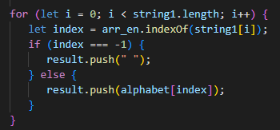

ASSIMBAYEV MARAT
Frontend developer
ABOUT ME
I am from the city of Astana, the country of Kazakhstan. I love programming. My dream is to become a better programmer
SKILS
- JavaScript
- TypeScript
- React
- Git
- Redux
- Visual Studio Code
CODE EXAMPLES
CONTACT ME
- discord: MaratReactJS
- phone number: +7 707 907 17 77
EDUCATION
- Course Profession Junior Frontend Developer Stream 2
- Youtube Course Archakov Blog
EDUCATION PROJECTS
A shortened copy of the Jira program https://maratreactjs.github.io/jira/
Web application functionality:
- creation of working time log cards
- the ability to transfer the log to another date using a drag-and-drop
Technology stack:
- JavaScript
- React
- Redux Toolkit
ENGLISH LANGUAGE
- level A2 studied in Duo Lingo app